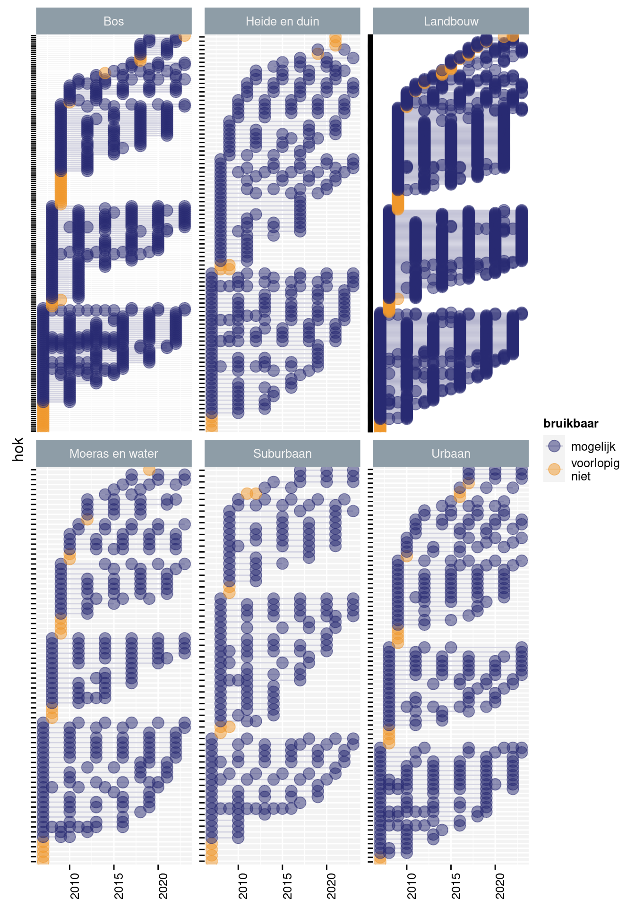
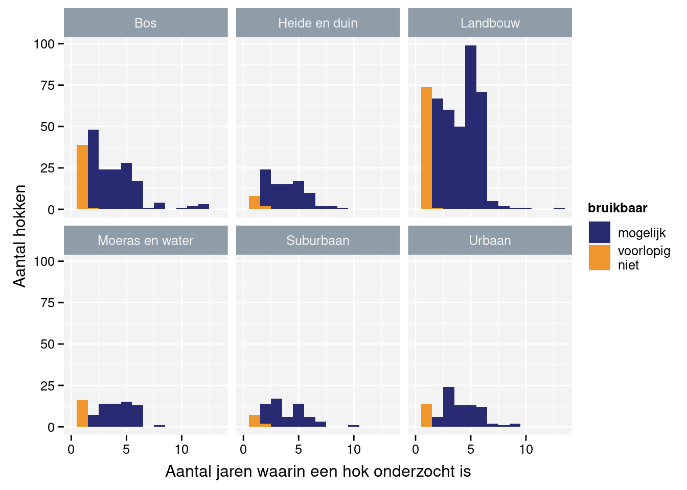
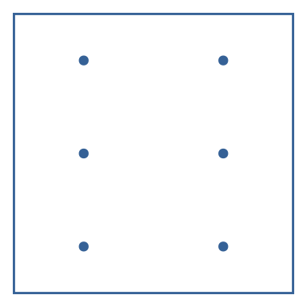

Inzameling van de tellingen in het veld
Hier beschrijven we beknopt het veldwerk, voor de details verwijzen we naar Vermeersch, Ledegen, en Feys (2018).
1 Steekproef
De UTM 1 x 1 km hokken vormen de basis waaruit de steekproef getrokken is. Bij de start van het meetnet hebben we de hokken opgedeeld in een aantal strata. De regels zijn gebaseerd op het oppervlakteaandeel van een bepaald landgebruik op basis van de Biologische Waarderingkaart (Vriens e.a. 2011).
- Landbouw: minstens 80% landbouw. 6311 hokken.
- Urbaan: minstens 80% urbaan. 416 hokken.
- Bos: minstens 80% bos. 319 hokken.
- Suburbaan: minstens 80% suburbaan. 201 hokken.
- Heide en duin: minstens 20% heide of duin. 199 hokken.
- Moeras en water: minstens 20% moeras en water. 137 hokken.
Uit deze set trekken we een aselecte, gestratificeerde steekproef van 1200 hokken waarbij zeldzamere habitats overbemonsterd worden. We streven er naar om jaarlijks 300 hokken te bemonsteren in een driejarige rotatie. De waarnemers mochten in het eerste jaar 300 hokken kiezen uit de set van 1200. Deze set van hokken komen in principe opnieuw aan bod in jaren 4, 7, 10, … In jaar 2 kiezen ze 300 hokken uit de overgebleven 900 hokken. Deze set komt opnieuw aan bod in jaren 5, 8, 11, … Tenslotte kiezen de waarnemers in het derde jaar een laatste set van 300 hokken uit de laatste 900 hokken. Deze set hokken bemonsteren we in de jaren 3, 6, 9, 12, …
Figuur 1 geeft de effectieve monitoringsinspanning weer. In deze figuur hebben we de hokken gesorteerd volgens 1) het eerste jaar met gegevens, 2) het laatste jaar met gegevens, 3) het tweede jaar met gegevens, 4) het derde jaar met gegevens, … Hierdoor staan hokken met een meer gelijkende onderzoeksgeschiedenis dicht bij elkaar. Merk op dat de driejarige cyclus voor de meest hokken wordt gerespecteerd. Voor sommige hokken is de inspanning variabel, soms frequenter dan om de drie jaar, soms zit er meer tijd tussen. Sommige hokken werden slechts in een of twee jaar onderzocht (Figuur 2). Voor het onderscheid tussen mogelijk bruikbaar en voorlopig niet bruikbaar verwijzen we naar de beschrijving van de verwerking van de gegevens.

2 Steekproefeenheid
De steekproefeenheid bestaat uit een hok van 1 x 1 km. Binnen dit hok worden zes punten vastgelegd in een vaste patroon (Figuur 3). Indien de punten in de praktijk niet bereikbaar zijn, mag de waarnemer ze verplaatsen naar het dichtstbijzijnde bereikbare punt. De waarnemer documenteert deze wijziging zodat we in de toekomst steeds op dezelfde punten blijven waarnemen.

3 Tellingen
In het jaar dat we een hok bemonsteren zal de waarnemer het hok in drie periodes bezoeken: 1 maart - 15 april, 16 april - 31 mei, 1 juni - 15 juli. Tussen twee opeenvolgende bezoeken moet er minstens twee weken liggen. Alle meetpunten van een hok worden op dezelfde dag onderzocht tussen zonsopgang en 4 uur na zonsopgang. Op elk meetpunt telt de waarnemer gedurende 5 minuten het aantal volwassen vogels per soort. Overvliegende groepen vogels worden hierbij niet meegeteld.
Onkelinx, T. et al.
2024
10.21436/inbor.102669823
Referenties
Vermeersch, Glenn, Hannes Ledegen, en Simon Feys. 2018. ‘Methodehandleiding Bij Het Project ’Algemene Broedvogelmonitoring Vlaanderen (ABV)’’. 2018 93. Brussels, Belgium: Instituut voor Natuur- en Bosonderzoek. https://doi.org/10.21436/inbor.15674942.
Vriens, Lieve, Hans Bosch, Geert De Knijf, Steven De Saeger, Robin Guelinckx, Patrik Oosterlynck, Martine Van Hove, en Desiré Paelinckx. 2011. De biologische waarderingskaart: biotopen en hun verspreiding in vlaanderen en het Brussels Hoofdstedelijk Gewest. Mededelingen van het Instituut voor Natuur- en Bosonderzoek INBO.M.2011.1. België: Instituut voor Natuur- en Bosonderzoek.